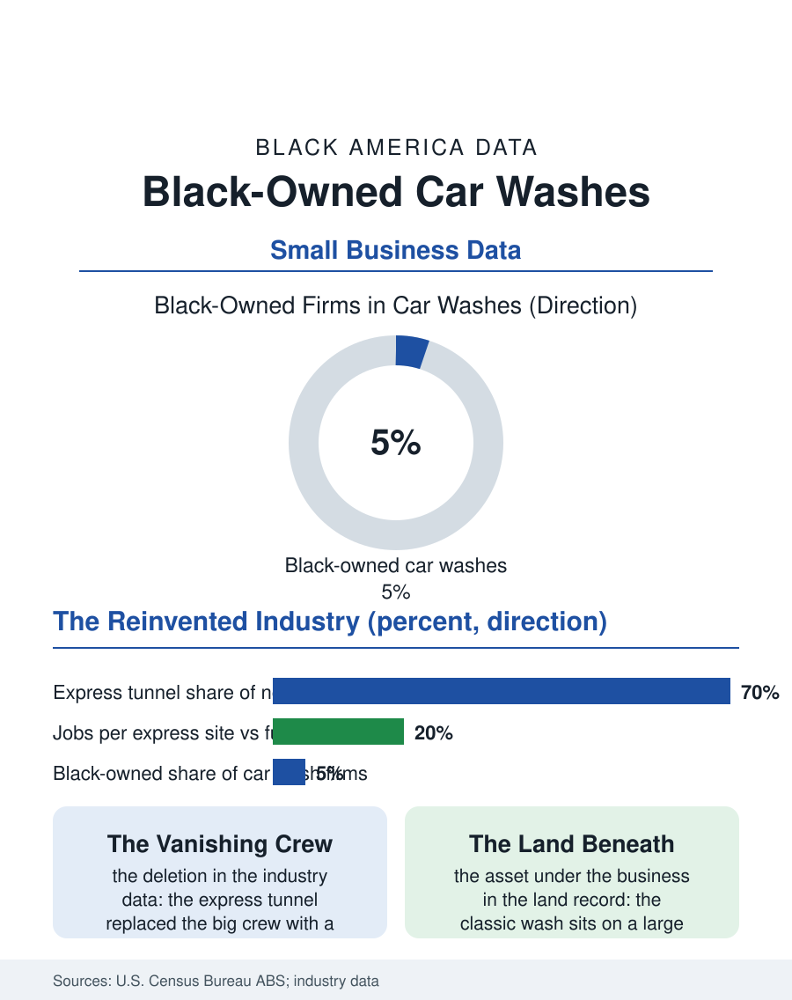

Black Business
The Tunnel and the Hand: Black-Owned Car Washes
The subscription tunnel reinvented the car wash, deleting the crew jobs and raising entry capital, while Black owners hold the detailing and legacy segments. The car wash file.

The car wash has been reinvented in plain sight: the hand wash and the coin bay giving way to the express exterior tunnel, a subscription business selling monthly unlimited plans from gleaming sites at suburban intersections. The industry's consolidation is one of the fastest in American small business, private equity platforms assembling regional chains by the hundred, and Black-owned car washes, historically a mainstay of the neighborhood service economy, now operate in the narrowing independent tier. This article reads the car wash file.
From Hand Wash to Subscription
The old industry sorted car washes into labors: full-service washes employing large crews, the classic first-job and second-chance employer of the Black urban economy, where the wash rack's workforce was heavily Black and Latino and the owner often a pillar of the commercial strip; self-service bays renting water and time; and in-bay automatics at gas stations. The express exterior model broke the pattern by deleting the labor: a tunnel, a pay station, free vacuums, three employees, and a membership ledger. The industry data record the consequences in the employment numbers, sites multiplying while jobs per site collapse, and in the ownership numbers, where the capital per site, land, tunnel equipment, water systems, runs into the millions, moving the entry point from the neighborhood entrepreneur's reach toward the platform's. Black-owned washes survive and in places thrive in the segments the tunnel does not serve: the detail and full-service shops where the product is the hand finish, the fleet accounts, dealerships, rental agencies, municipal vehicles, bought on contract reliability, and the legacy neighborhood washes whose land, owned outright across decades, has become the balance sheet's main event.
The Land Under the Wash
That last asset deserves its own analysis, because the car wash file doubles as a real estate file. The classic wash sits on a large, flat, high-visibility parcel on a commercial corridor, exactly the land the corridor's redevelopment covets, and as Black neighborhoods' land values rise, the wash owner faces the atlas's recurring land question in a pure form: the business's operating value, a modest multiple of a modest cash flow, against the land's development value, a life's retirement in a single transaction. Owners across the country have taken the land sale, and each sale closes a Black business and a first-job employer while realizing an owner's entirely legitimate equity, the tension the heirs' property and land files record at the scale of single parcels. The platforms' acquisition model works the same seam from the other side, buying washes for their sites and memberships, keeping the sign where it earns, and transferring ownership to distant funds. Water writes the environmental line: the industry's recycling systems and municipal discharge rules professionalized the wash's plumbing long ago, one of the express model's genuine efficiencies per car, and drought-region regulation in the West now counts washes among the managed commercial water users, a compliance cost the independent tier absorbs less easily than the platforms.
What Remains Ownable
The file's forward chapter sorts the surviving independent strategies by their defensibility. Detailing and ceramic coating occupy the craft summit, priced by the hour of skilled hand work the tunnel cannot automate, and Black detailers, heirs of a car culture with deep roots in the community, hold a visible share of the premium segment and its social media storefronts. Fleet and dealer services sell reliability under contract, the least glamorous and most durable revenue in the industry. The membership express model itself is not closed: regional Black-owned express operators exist, financed through the SBA and syndicated equity the franchise files describe, proof that the capital door, while heavier, is not sealed, and the industry's own diversity reporting by the major platforms' development arms has begun to court exactly those operators for the diverse suburbs their site models prize. The car wash file closes at the vacuum island at dusk, where the industry's whole history can be read in one sightline: the hand crew's descendants detailing by hand at premium prices, the tunnel running its subscriptions behind them, the land appreciating under both. Black ownership in this industry was built by hand, in the most literal sense in this atlas. What survives of it will be the parts where the hand is the point.
More in Black Business
Black-Owned Businesses: Counts, Receipts, and the Representation Gap
About 161,000 Black-owned employer firms and three million solo ventures: how the Census Bureau counts Black business ownership, where firms concentrate, and the gap between population share and business share.
Black Median Net Worth: The Wealth Gap in Federal Reserve Data
The Federal Reserve puts Black median family net worth at $44,900, against $285,000 for White families — about 16 cents on the dollar. The widest gap in economic data.
Black Buying Power: The $1.8 Trillion Consumer Economy
Black buying power is estimated at about $1.8 trillion — larger than the economy of most nations. What the figure measures, who produces it, and what it buys.
Source: U.S. Census Bureau, Annual Business Survey (NAICS 811192); International Carwash Association industry data.